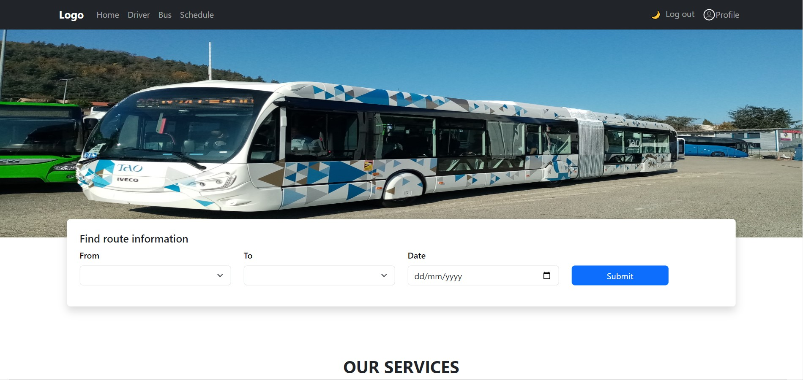
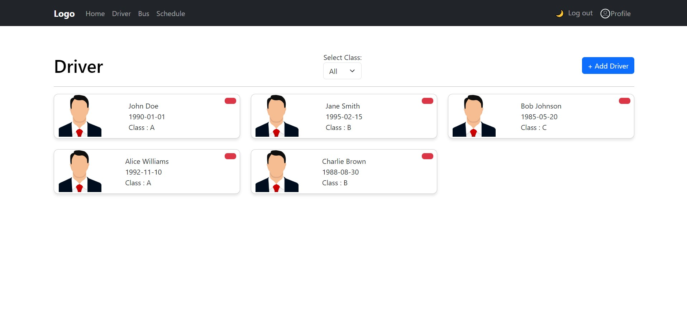
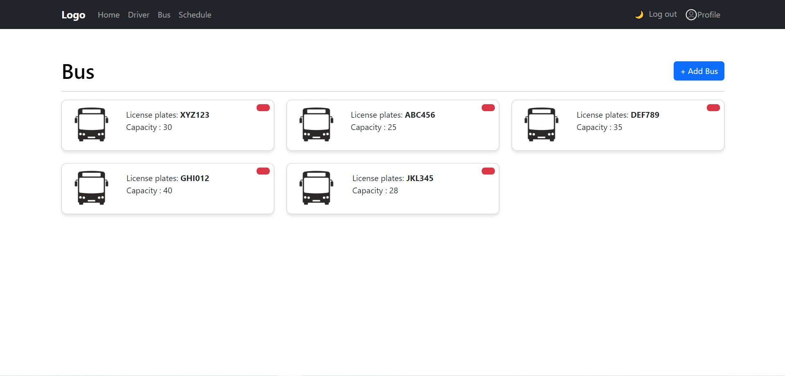
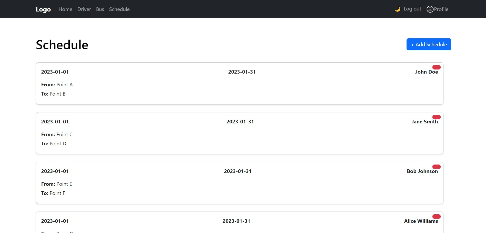
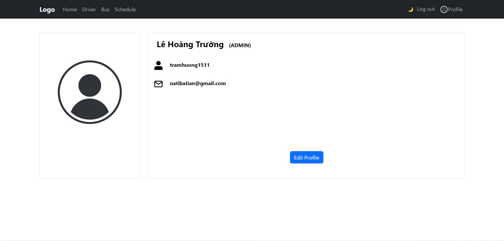
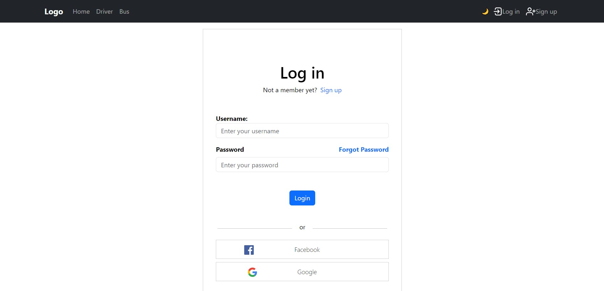
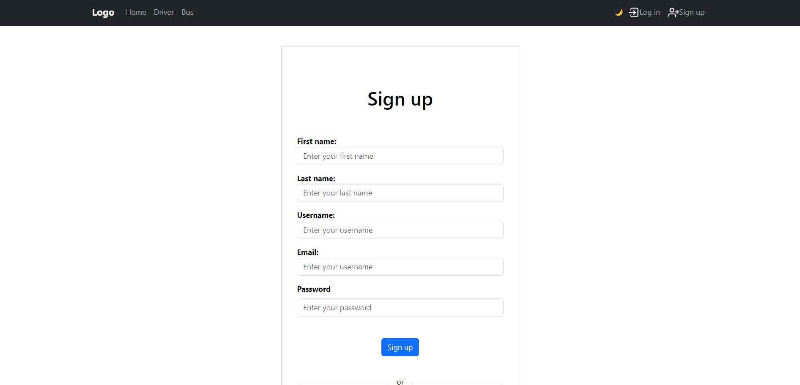

Интерфейсы
Home Page
- Интерфейс домашней страницы используется для поиска маршрутов по мере необходимости.

Driver Page
- Интерфейс драйвера для отображения всех драйверов по запросу.

Bus Page
- Интерфейс шины отображает всю шину по мере необходимости.

Schedule Page
- В представлении расписания отображаются все доступные расписания.

Profile Page
- Пользовательский интерфейс для отображения текущей информации о пользователе

LogIn Page
- Интерфейс страницы входа

SignUp Page
- Интерфейс страницы регистрации
